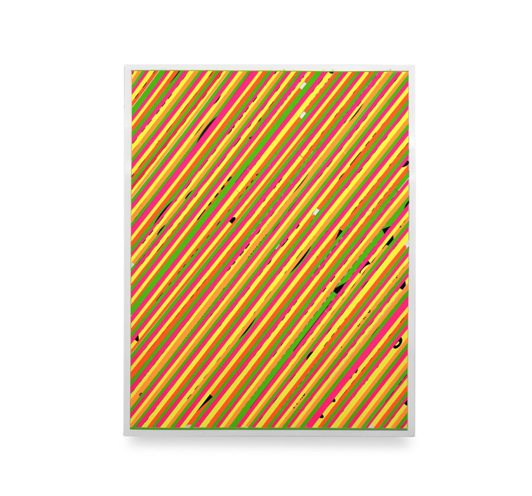

Christopher Michlig: Catalog
Devening Projects is pleased to announce Catalog, an exhibition of new collages and sculptures by Christopher Michlig. Catalog is an exhibition whose title functions as both pun and structure. A play on the word cat, the exhibition includes typographic compositions and sculptures that depict cats alongside works that are formally abstract, while also invoking the familiar commercial and archival logic of the catalog. The term is taken literally as both subject and format, unfolding through iterative compositions and serialized imagery.
The raw material for this body of work comes from a singular moment in Los Angeles printing history. In the week prior to the closure of the Colby Poster Printing Company in 2012, hundreds of type specimen posters were commissioned by Michlig and printed on the company’s signature fluorescent poly-coated poster paper. Long embedded in the city’s visual culture, these posters now function as both a material source and a cultural archive for Michlig.
Michlig’s practice often involves cutting apart letterpress posters and recomposing their typographic fragments into new arrangements. For Catalog, this process is focused on cats and uses the Colby posters as the sole source material for the collages. Feline presence is suggested through truncated letters, punctuation, and partial forms set against vivid neon grounds. The cats are not depicted directly but emerge through attitude and compositional gesture.
The logic of fragmentation in the work finds a cultural reference in the Cheshire Cat from the animated Alice in Wonderland. Appearing and disappearing in parts as well as in full, the character is defined by selective visibility. This mode of partial presence parallels the exhibition’s use of typographic fragments and modular components, where figures are assembled through absence and recombination rather than complete depiction.
The color palette is expanded through custom silkscreen-printed papers that recreate and subtly extend the Colby palette. In addition to the collages, the exhibition includes a series of colorful paper sculptures of cat heads. Each sculpture is assembled from multiple components—such as sunglasses, ears, whiskers, noses, and mounts—constructed from different colored papers. The heads sit atop laminated cardboard and Masonite bases shaped like exaggerated cat tails, nodding to the undulating forms of Frank Gehry’s Wiggle Chairs from the 1990s.
Across both wall-based and sculptural works, Catalog foregrounds cutting, recombination, and serial variation. Like flipping through a print magazine or mail-order catalog, the exhibition unfolds as a sequence of related objects that reward sustained looking while resisting fixity.
Christopher Michlig is an artist, author, and Professor of Art based in Eugene, Oregon whose interdisciplinary practice explores the poetics of material transformation, cultural entropy, and the mutable relationship between form and meaning. Working across sculpture, collage, print, and text, Michlig reconfigures found and industrial materials to reveal the social, psychological, and semiotic forces embedded within the built and designed environment.
His book File Under: Slime (2022) extends his artistic research into a cross-disciplinary study of “slime” as both metaphor and material condition – a concept through which he examines the porous boundaries between culture and nature, order and disorder, language and substance. The book has been widely noted for its critical and aesthetic range: Print Magazine’s Steven Heller describes it as “all-consuming as the existential notions underscoring the plot of The Blob,” while praising how it “opens up a wealth of slime lore … and explores how it oozes out into our popular consciousness.” In the Los Angeles Review of Books, Mariella Rudi calls File Under: Slime “a cultural history of slime, tracing a sleek line through art, fashion, literature, film, science, commerce, and beyond,” and Hyperallergic’s Matt Stromberg writes that it is “enthralling and boundaryless,” arguing that slime “best defines our contemporary condition.”